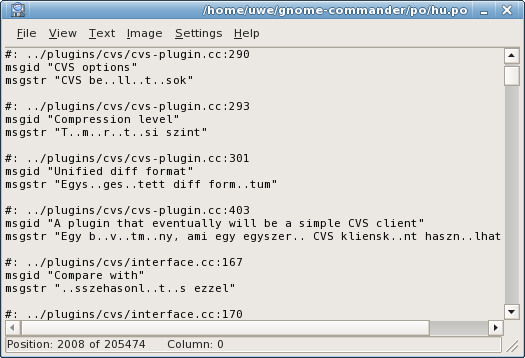
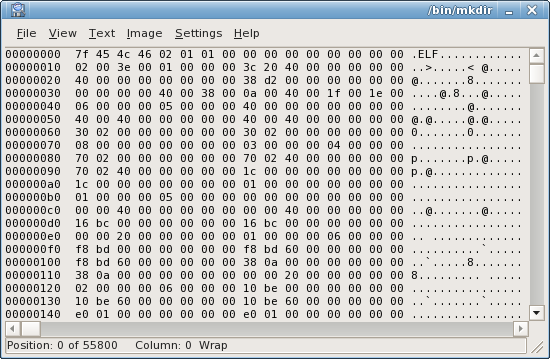
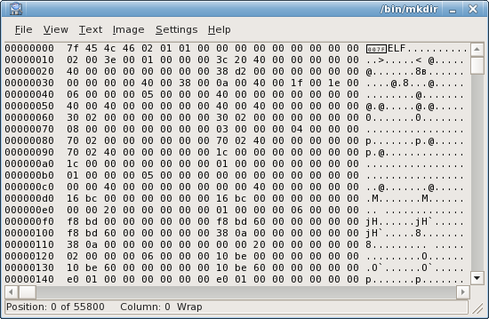

GNOME Commander
A powerful file manager for the GNOME desktop environment
 Documentation
Documentation
Here, additional user documentation, FAQ, useful tips and tricks, file management scripts and other stuff connected to GCMD is listed. Check this page from time to time, or you could contact the mailing lists and suggest/contribute with some content for this website.
 Tips and tricks for Gnome Commander
Tips and tricks for Gnome Commander
Tips and tricks:
Handling MIME types
Since GNOME has changed to follow the freedesktop.org standard of handling MIME types, the editing of preferred programs in GNOME Commander is currently broken (v 1.1.7). We do have this in our TODO file, but until GCMD can handle edititing of preferred programs, there are two other ways of managing this on user basis; use nautilus or manually edit the configuration files that controls MIME types in your home directory. Using Nautilus for doing this can feel quite awkward for GNOME Commander users, we usually do not use GNOME Commander because we like using Nautilus.. Anyway, here is how to do it the manual way:
These configuration files usually lives in ~/.local/share/applications.
There are three types of files here:
- XXX-usercreated.desktop Where "XXX" stands for the application in question.
These files contain information about which MIME types the application can handle, what command
will be used for launching it, if it shall run in terminal, and language localization.
Example:[Desktop Entry] Encoding=UTF-8 Name=display MimeType=image/png;image/jpeg; Exec='/usr/bin/display' Type=Application Terminal=false NoDisplay=true
- mimeinfo.cache This single file assigns every MIME type a list of applications.
These are the entries you will see via "Open with" in GCMD. However, instead of application commands,
each entry points to the .desktop files, like the XXX-usercreated.desktop from above. There can be
several possible targets for a single MIME type entry, separated by semicolon.
Example:[MIME Cache] audio/mpeg=xmms-usercreated.desktop;mpg123-usercreated.desktop; image/png=display-usercreated.desktop
- defaults.list This file controls which application that is the default one, the one
that starts when you double click a file.
Example:[Default Applications] audio/mpeg=xmms-usercreated.desktop image/png=display-usercreated.desktop
Please refer to freedesktop.org or your distribution of choise for further details.
Handling archives
GCMD can be configured so that working with archives becomes quite practical. The preferred way is to activate the build in Fileroller plugin in the Plugins menu. By activating this plugin you get additional entries in the popup menu by right clicking on selected files and folders (make sure that Fileroller is installed in your system). By clicking on an archive, the popup menu lets you choose where to extract the archive to.
The old way is:
- Open the options dialog and go to the Programs tab.
- Add two favorite apps using the values shown here and here.
{kind=link}
{kind=link}
You can now right click any file or folder and choose Create archive... to compress it and right click compressed files and choose Extract archive... to extract it.
Using removable devices
If you use removable devices such as cd's, floppies and cameras a lot you can make GC automaticly take care of mounting them by following this guide:
- Open the options dialog and go to the Devices tab.
- Add the devices that you are using. This is how the program looks with a few added devices. In the last image the red circle shows the available devices, there is also a button, in the green circle, to press if we want to unmount the floppy, which happened to be mounted. The icons that are used for the devices in the example should be available in the $(prefix)/share/pixmaps/gnome-commander/device-icons folder on your computer.
- There is also an option to skip mounting in the option device tab, this can be useful for making shortcuts to directories, or if you have some automounting feature that mounts it at its mountpoint when available, or if you use Supermount that does it on access basis.
{kind=link}
{kind=link}
{kind=link}
Using a nice nautilus icon theme
This is outdated info since Nautilus and later Gnome versions no longer uses these kind of themes.
The default icon theme that comes with GC lacks icons for a lot of file types and only looks good at icon size 16. There are other themes around though, that are more complete and looks better in bigger sizes. Unscalable Gorilla by Jimmac is one example and can be used in GC by following theese steps:
- Download the theme.
- Unpack the theme to whereever you want.
- Start GC and open the options dialog. In the Layout tab set the Theme icon directory to be the folder where you extracted Unscalable Gorilla. Also change Row height and Icon size to 20 or some other size that you like. When you're done also make sure that the Graphical mode is set to MIME icons.
- When you now close the options dialog the file lisings should refresh and you should see Unscalable Gorilla being used.
This guide should work for all other nautilus icon themes as well.
Open a full terminal
Sometimes you want a quick way of opening a full teminal window with the current directory as
the terminals working directory. Well, that is easy, just type sh , or
maybe bash if you prefer, in the GCMD
command line and hit SHIFT ENTER - there you have it.
 Internal file viewer
Internal file viewer
Main features include:
- Several input modes, including
- ASCII
- UTF-8
- Four display modes:
- Text display, with or without line wrapping.
- Binary file display.
- Hexadecimal.
- Image rendering.
- Text Marking, Copying to Clipboard
- Text Search, Hex Search
- Fast file loading (using MMAP or incremented loading when possible, just like Midnight Commander's internal viewer
Internal Viewer's Window

- The current file name is displayed in the window's title.
- The file size (in bytes), and the current offset are displayed on the status bar.
- The current offset in bytes is relative to the first byte displayed on the first line.
- Use arrow keys to navigate the file.
- Home, End, Page-Up, Page-Down and Mouse Wheel scrolling are supported.
Using the internal viewer
| Menu Item | Keyboard Shortcut | Details |
|---|---|---|
| File|Close | Escape, or CTRL-W |
Close the internal viewer window |
| Text|Wrap Lines | W | Toggles line wrapping. (Applicable only in text display modes) |
| Input Modes: | ||
| Text|Encoding | This menu contains all possible character encodings. (If you need an additional encoding, send an email to the developers). |
|
| Text|Encoding|ASCII | A | Sets ASCII input mode. |
| Text|Encoding|UTF-8 | U | Sets UTF-8 input mode. |
| Text|Encoding|CP437 | Q | Presing "Q" will quickly set ASCII input mode, with Codepage 437 encoding. (Good for binary and hex mode viewing). |
| Display modes: | ||
| View|Text | 1 | Sets display mode to TEXT |
| View|Binary | 2 | Sets display mode to Binary. Switching to Binary display mode will automatically set ASCII input mode (UTF-8 is not supported with binary display) |
| View|Hex | 3 | Sets display mode to hex dump. Switching to Hex display mode will automatically set ASCII input mode (UTF-8 is not supported with hex dump display) |
| View|Image | 4 | Will try to load the file as an image. Loading is done using GDK, so every GDK-supported format should work. |
| Font Size: | ||
| View|Larger Font | = or + | Increment the font size. |
| View|Smaller Font | - | Decrement the font size. |
| Image Manipulation: | ||
| Image|Rotate Clockwise | CTRL+R | Rotate the image 90 degress. (Applicable only in IMAGE display mode) |
| Image|Rotate Counter Clockwise | Rotate the image 270 degress. (Applicable only in IMAGE display mode) |
|
| Image|Rotate 180 | CTRL+SHIFT+R | Rotate the image 180 degress. (Applicable only in IMAGE display mode) |
| Image|Flip Vertically | Vertically Flip the image. (Applicable only in IMAGE display mode) |
|
| Image|Flip Horizontally | Horizontally Flip the image. (Applicable only in IMAGE display mode) |
|
| Settings: | ||
| Settings|Binary Mode | Set number of bytes to display on each line in Binary display mode. | |
| Settings|Hex Mode|Decimal Offset Display | Display the offset in hexadecimal or decimal numbers. (Only applicable in Hex display mode). |
|
| Settings|Save as Default Settings | CTRL+S | Saves the current window size, input mode, and other settings as the default. (Note: the starting Display mode is determined by the file's content, and is not saved as a user setting) |
Input Modes
Here's an example of using different input modes. The displayed file is a UTF-8 file (this is actually the Hungarian translation file from the gnome-commander project).
UTF-8 is an encoding scheme used to encode Unicode characters into a multibyte string. A single UTF-8 character can be composed from up to 6 bytes.
In ASCII mode (without any further chacarater encodings, press "A" to set it), only bytes with ASCII value above 0x20 and below 0x7F are displayed. All other characters are shown as dots:
In ASCII mode with Codepage 437 encoding (press "Q" to set it), extended ASCII characters (above ASCII 0x7E) are displayed:

In UTF-8 Input mode (Press "U" to set it), the correct characters are displayed:

Other input modes such as cyrillic or greek can be selected in the "Text" menu, section "Encoding".
Binary Display Mode
Binary display mode is suitible for quickly viewing binary files. In Binary display mode, the number of bytes displayed on each line can be changed in the "Settings" menu.
Viewing a file in Binary display mode, in ASCII input mode:

The same file as above, with Codepage 437 encoding:
Hex dump Display Mode
This is a simple Hex dump display mode (similar to using od -t x1). In Hex dump display mode,
you can only use ASCII input mode, with or without additional character encodings (but not UTF-8).
Below is a short demonstration of the Hex dump display mode. The file displayed is 256 bytes in size, each byte corresponds to a different ASCII value.
ASCII Encoding:
Codepage 437 Encoding:

Cyrillic Encoding:
Image Display Mode
The viewer starts with the image fitted to the viewer window size = larger window = larger view
 Metadata in GNOME Commander
Metadata in GNOME Commander
Metadata
Metadata formats supported by GNOME Commander:
Metadata
Most multimedia formats can contain different kinds of metadata describing the subject matter and some technical data about the content of the file. From version 1.2.1, GNOME Commander has some ability to handle different kinds of metadata embedded in files. This page lists all tags supported with descriptions of the tags, and some descriptions on how and where to make use of it.
Howto use.
In the advanced rename tool
Metadata tags can be used as templates in the advanced renaming tool with the $T(Tag.Code) placeholder.
As an example: Mark a couple of jpeg files from a digital camera, chose the renaming tool and write $T(Exif.DateTime)
as Template in the inputbox at top, then it will replace the filenames in marked files with the date and time the photography was taken
(Exif is commonly used by digital cameras).
Supported metatag listing
Audio
| Tag.Code | Tag name | Tag description |
|---|---|---|
| Audio.Album | Album | Name of the album. |
| Audio.AlbumArtist | Album Artist | Artist of the album. |
| Audio.AlbumGain | Album Gain | Gain adjustment of the album. |
| Audio.AlbumPeakGain | Album Peak Gain | Peak gain adjustment of album. |
| Audio.AlbumTrackCount | Album Track Count | Total number of tracks on the album. |
| Audio.Artist | Artist | Artist of the track. |
| Audio.Bitrate | Bitrate | Bitrate in kbps. |
| Audio.Channels | Channels | Number of channels in the audio (2 = stereo). |
| Audio.Codec | Codec | Codec encoding description. |
| Audio.CodecVersion | Codec Version | Codec version. |
| Audio.Comment | Comment | Comments on the track. |
| Audio.Copyright | Copyright | Copyright message. |
| Audio.CoverAlbumThumbnailPath | Cover Album Thumbnail Path | File path to thumbnail image of the cover album. |
| Audio.DiscNo | Disc Number | Specifies which disc the track is on. |
| Audio.Duration | Duration | Duration of track in seconds. |
| Audio.Duration.MMSS | Duration [MM:SS] | Duration of track as MM:SS. |
| Audio.Genre | Genre | Type of music classification for the track as defined in ID3 spec. |
| Audio.IsNew | Is New | Set to "1" if track is new to the user (default "0"). |
| Audio.ISRC | ISRC | ISRC (international standard recording code). |
| Audio.LastPlay | Last Play | When track was last played. |
| Audio.Lyrics | Lyrics | Lyrics of the track. |
| Audio.MBAlbumArtistID | MB album artist ID | MusicBrainz album artist ID in UUID format. |
| Audio.MBAlbumID | MB Album ID | MusicBrainz album ID in UUID format. |
| Audio.MBArtistID | MB Artist ID | MusicBrainz artist ID in UUID format. |
| Audio.MBTrackID | MB Track ID | MusicBrainz track ID in UUID format. |
| Audio.MPEG.ChannelMode | Channel Mode | MPEG channel mode. |
| Audio.MPEG.Copyrighted | Copyrighted | "1" if the copyrighted bit is set. |
| Audio.MPEG.Layer | Layer | MPEG layer. |
| Audio.MPEG.Original | Original Audio | "1" if the "original" bit is set. |
| Audio.MPEG.Version | MPEG Version | MPEG version. |
| Audio.Performer | Performer | Name of the performer/conductor of the music. |
| Audio.PlayCount | Play Count | Number of times the track has been played. |
| Audio.ReleaseDate | Release Date | Date track was released. |
| Audio.SampleRate | Sample Rate | Sample rate in Hz. |
| Audio.Title | Title | Title of the track. |
| Audio.TrackGain | Track Gain | Gain adjustment of the track. |
| Audio.TrackNo | Track Number | Position of track on the album. |
| Audio.TrackPeakGain | Track Peak Gain | Peak gain adjustment of track. |
| Audio.Year | Year | Year. |
Doc
| Tag.Code | Tag name | Tag description |
|---|---|---|
| Doc.Author | Author | Name of the author. |
| Doc.ByteCount | Byte Count | Number of bytes in the document. |
| Doc.CaseSensitive | Case Sensitive | Case sensitive. |
| Doc.Category | Category | Category. |
| Doc.CellCount | Cell Count | Number of cells in the spreadsheet document. |
| Doc.CharacterCount | Character Count | Number of characters in the document. |
| Doc.Codepage | Codepage | The MS codepage to encode strings for metadata. |
| Doc.Comments | Comments | User definable free text. |
| Doc.Company | Company | Organization that the <Doc.Creator> entity is associated with. |
| Doc.Author | Author | Name of the author. |
| Doc.Creator | Creator | An entity primarily responsible for making the content of the resource, typically a person, organization, or service. |
| Doc.Created | Created | Datetime document was originally created. |
| Doc.DateCreated | Date Created | Date associated with an event in the life cycle of the resource (creation/publication date). |
| Doc.DateModified | Date Modified | The last time the document was saved. |
| Doc.Description | Description | An account of the content of the resource. |
| Doc.Dictionary | Dictionary | Dictionary. |
| Doc.EditingDuration | Editing Duration | The total time taken until the last modification. |
| Doc.Generator | Generator | The application that generated this document. |
| Doc.HiddenSlideCount | Hidden Slide Count | Number of hidden slides in the presentation document. |
| Doc.ImageCount | Image Count | Number of images in the document. |
| Doc.InitialCreator | Initial Creator | Specifies the name of the person who created the document initially. |
| Doc.Keywords | Keywords | Searchable, indexable keywords. |
| Doc.Language | Language | The locale language of the intellectual content of the resource. |
| Doc.LastPrinted | Last Printed | The last time this document was printed. |
| Doc.LastSavedBy | Last Saved By | The entity that made the last change to the document, typically a person, organization, or service. |
| Doc.LineCount | Line Count | Number of lines in the document. |
| Doc.LinksDirty | Links Dirty | Links dirty. |
| Doc.LocaleSystemDefault | Locale System Default | Identifier representing the default system locale. |
| Doc.Manager | Manager | Name of the manager of <Doc.Creator> entity. |
| Doc.MMClipCount | Multimedia Clip Count | Number of multimedia clips in the document. |
| Doc.NoteCount | Note Count | Number of "notes" in the document. |
| Doc.ObjectCount | Object Count | Number of objects (OLE and other graphics) in the document. |
| Doc.PageCount | Page Count | Number of pages in the document. |
| Doc.ParagraphCount | Paragraph Count | Number of paragraphs in the document. |
| Doc.PresentationFormat | Presentation Format | Type of presentation, like "On-screen Show", "SlideView", etc. |
| Doc.PrintDate | Print Date | Specifies the date and time when the document was last printed. |
| Doc.PrintedBy | Printed By | Specifies the name of the last person who printed the document. |
| Doc.RevisionCount | Revision Count | Number of revision on the document. |
| Doc.Scale | Scale | Scale. |
| Doc.Security | Security | One of: "Password protected", "Read-only recommended", "Read-only enforced" or "Locked for annotations". |
| Doc.SlideCount | Slide Count | Number of slides in the presentation document. |
| Doc.SpreadsheetCount | Spreadsheet Count | Number of pages in the document. |
| Doc.Subject | Subject | Document subject. |
| Doc.TableCount | Table Count | Number of tables in the document. |
| Doc.Template | Template | The template file that is been used to generate this document. |
| Doc.Title | Title | Title of the document. |
| Doc.WordCount | Word Count | Number of words in the document. |
Exif
| Tag.Code | Tag name | Tag description |
|---|---|---|
| Exif.ApertureValue | Aperture | The lens aperture. The unit is the APEX value. |
| Exif.Artist | Artist | Name of the camera owner, photographer or image creator. The detailed format is not specified, but it is recommended that the information be written for ease of Interoperability. When the field is left blank, it is treated as unknown. |
| Exif.BatteryLevel | Battery Level | Battery level. |
| Exif.BitsPerSample | Bits per Sample | The number of bits per image component. Each component of the image is 8 bits, so the value for this tag is 8. In JPEG compressed data a JPEG marker is used instead of this tag. |
| Exif.BrightnessValue | Brightness | The value of brightness. The unit is the APEX value. Ordinarily it is given in the range of -99.99 to 99.99. |
| Exif.CFAPattern | CFA Pattern | The color filter array (CFA) geometric pattern of the image sensor when a one-chip color area sensor is used. It does not apply to all sensing methods. |
| Exif.CFARepeatPatternDim | CFA Repeat Pattern Dim | CFA Repeat Pattern Dim. |
| Exif.ColorSpace | Color Space | The color space information tag is always recorded as the color space specifier. Normally sRGB (=1) is used to define the color space based on the PC monitor conditions and environment. If a color space other than sRGB is used, Uncalibrated (=FFFF.H) is set. Image data recorded as Uncalibrated can be treated as sRGB when it is converted to FlashPix. |
| Exif.ComponentsConfiguration | Components Configuration | Information specific to compressed data. The channels of each component are arranged in order from the 1st component to the 4th. For uncompressed data the data arrangement is given in the <Exif.PhotometricInterpretation> tag. However, since <Exif.PhotometricInterpretation> can only express the order of Y, Cb and Cr, this tag is provided for cases when compressed data uses components other than Y, Cb, and Cr and to enable support of other sequences. |
| Exif.CompressedBitsPerPixel | Compressed Bits per Pixel | Information specific to compressed data. The compression mode used for a compressed image is indicated in unit bits per pixel. |
| Exif.Compression | Compression | The compression scheme used for the image data. When a primary image is JPEG compressed, this designation is not necessary and is omitted. When thumbnails use JPEG compression, this tag value is set to 6. |
| Exif.Contrast | Contrast | The direction of contrast processing applied by the camera when the image was shot. |
| Exif.Copyright | Copyright | Copyright information. The tag is used to indicate both the photographer and editor copyrights. It is the copyright notice of the person or organization claiming rights to the image. The Interoperability copyright statement including date and rights should be written in this field; e.g., "Copyright, John Smith, 19xx. All rights reserved.". The field records both the photographer and editor copyrights, with each recorded in a separate part of the statement. When there is a clear distinction between the photographer and editor copyrights, these are to be written in the order of photographer followed by editor copyright, separated by NULL (in this case, since the statement also ends with a NULL, there are two NULL codes) (see example 1). When only the photographer is given, it is terminated by one NULL code. When only the editor copyright is given, the photographer copyright part consists of one space followed by a terminating NULL code, then the editor copyright is given. When the field is left blank, it is treated as unknown. |
| Exif.CustomRendered | Custom Rendered | The use of special processing on image data, such as rendering geared to output. When special processing is performed, the reader is expected to disable or minimize any further processing. |
| Exif.DateTime | Date and Time | The date and time of image creation. |
| Exif.DateTimeDigitized | Date and Time (digitized) | The date and time when the image was stored as digital data. |
| Exif.DateTimeOriginal | Date and Time (original) | The date and time when the original image data was generated. For a digital still camera the date and time the picture was taken are recorded. |
| Exif.DeviceSettingDescription | Device Setting Description | Information on the picture-taking conditions of a particular camera model. The tag is used only to indicate the picture-taking conditions in the reader. |
| Exif.DigitalZoomRatio | Digital Zoom Ratio | The digital zoom ratio when the image was shot. If the numerator of the recorded value is 0, this indicates that digital zoom was not used. |
| Exif.DocumentName | Document Name | Document name. |
| Exif.ExifIfdPointer | Exif IFD Pointer | A pointer to the Exif IFD. Interoperability, Exif IFD has the same structure as that of the IFD specified in TIFF. |
| Exif.ExifVersion | Exif Version | The version of Exif standard supported. Nonexistence of this field is taken to mean nonconformance to the standard. |
| Exif.ExposureBiasValue | Exposure Bias | The exposure bias. The units is the APEX value. Ordinarily it is given in the range of -99.99 to 99.99. |
| Exif.ExposureIndex | Exposure Index | The exposure index selected on the camera or input device at the time the image is captured. |
| Exif.ExposureMode | Exposure Mode | This tag indicates the exposure mode set when the image was shot. In auto-bracketing mode, the camera shoots a series of frames of the same scene at different exposure settings. |
| Exif.ExposureProgram | Exposure Program | The class of the program used by the camera to set exposure when the picture is taken. |
| Exif.ExposureTime | Exposure Time | Exposure time, given in seconds. |
| Exif.FileSource | File Source | Indicates the image source. If a DSC recorded the image, this tag value of this tag always be set to 3, indicating that the image was recorded on a DSC. |
| Exif.FillOrder | Fill Order | Fill order. |
| Exif.Flash | Flash | This tag is recorded when an image is taken using a strobe light (flash). |
| Exif.FlashEnergy | Flash Energy | Indicates the strobe energy at the time the image is captured, as measured in Beam Candle Power Seconds (BCPS). |
| Exif.FlashPixVersion | FlashPix Version | The FlashPix format version supported by a FPXR file. |
| Exif.FNumber | F Number | Diameter of the aperture relative to the effective focal length of the lens. |
| Exif.FocalLength | Focal Length | The actual focal length of the lens, in mm. Conversion is not made to the focal length of a 35 mm film camera. |
| Exif.FocalLengthIn35mmFilm | Focal Length In 35mm Film | This tag indicates the equivalent focal length assuming a 35mm film camera, in mm. A value of 0 means the focal length is unknown. Note that this tag differs from the <Exif.FocalLength> tag. |
| Exif.FocalPlaneResolutionUnit | Focal Plane Resolution Unit | Indicates the unit for measuring <Exif.FocalPlaneXResolution> and <Exif.FocalPlaneYResolution>. This value is the same as the <Exif.ResolutionUnit>. |
| Exif.FocalPlaneXResolution | Focal Plane x-Resolution | Indicates the number of pixels in the image width (X) direction per <Exif.FocalPlaneResolutionUnit> on the camera focal plane. |
| Exif.FocalPlaneYResolution | Focal Plane y-Resolution | Indicates the number of pixels in the image height (Y) direction per <Exif.FocalPlaneResolutionUnit> on the camera focal plane. |
| Exif.GainControl | Gain Control | This tag indicates the degree of overall image gain adjustment. |
| Exif.Gamma | Gamma | Indicates the value of coefficient gamma. |
| Exif.GPS.Altitude | Altitude | Indicates the altitude based on the reference in <Exif.GPS.AltitudeRef>. The reference unit is meters. |
| Exif.GPS.AltitudeRef | Altitude Reference | Indicates the altitude used as the reference altitude. If the reference is sea level and the altitude is above sea level, 0 is given. If the altitude is below sea level, a value of 1 is given and the altitude is indicated as an absolute value in the <Exif.GPS.Altitude> tag. The reference unit is meters. |
| Exif.GPS.InfoIFDPointer | GPS Info IFDPointer | A pointer to the GPS Info IFD. The Interoperability structure of the GPS Info IFD, like that of Exif IFD, has no image data. |
| Exif.GPS.Latitude | Latitude | Indicates the latitude. The latitude is expressed as three RATIONAL values giving the degrees, minutes, and seconds, respectively. When degrees, minutes and seconds are expressed, the format is dd/1,mm/1,ss/1. When degrees and minutes are used and, for example, fractions of minutes are given up to two decimal places, the format is dd/1,mmmm/100,0/1. |
| Exif.GPS.LatitudeRef | North or South Latitude | Indicates whether the latitude is north or south latitude. The ASCII value 'N' indicates north latitude, and 'S' is south latitude. |
| Exif.GPS.Longitude | Longitude | Indicates the longitude. The longitude is expressed as three RATIONAL values giving the degrees, minutes, and seconds, respectively. When degrees, minutes and seconds are expressed, the format is ddd/1,mm/1,ss/1. When degrees and minutes are used and, for example, fractions of minutes are given up to two decimal places, the format is ddd/1,mmmm/100,0/1. |
| Exif.GPS.LongitudeRef | East or West Longitude | Indicates whether the longitude is east or west longitude. ASCII 'E' indicates east longitude, and 'W' is west longitude. |
| Exif.GPS.VersionID | GPS Tag Version | Indicates the version of <Exif.GPS.InfoIFD>. This tag is mandatory when <Exif.GPS.Info> tag is present. |
| Exif.ImageDescription | Image Description | A character string giving the title of the image. Two-bytes character codes cannot be used. When a 2-bytes code is necessary, the Exif Private tag <Exif.UserComment> is to be used. |
| Exif.ImageLength | Image Length | The number of rows of image data. In JPEG compressed data a JPEG marker is used instead of this tag. |
| Exif.ImageResources | Image Resources Block | Image Resources Block. |
| Exif.ImageUniqueID | Image Unique ID | This tag indicates an identifier assigned uniquely to each image. It is recorded as an ASCII string equivalent to hexadecimal notation and 128-bit fixed length. |
| Exif.ImageWidth | Image Width | The number of columns of image data, equal to the number of pixels per row. In JPEG compressed data a JPEG marker is used instead of this tag. |
| Exif.InterColorProfile | Inter Color Profile | Inter Color Profile. |
| Exif.InteroperabilityIFDPointer | Interoperability IFD Pointer | Interoperability IFD is composed of tags which stores the information to ensure the Interoperability and pointed by the following tag located in Exif IFD. The Interoperability structure of Interoperability IFD is the same as TIFF defined IFD structure but does not contain the image data characteristically compared with normal TIFF IFD. |
| Exif.InteroperabilityIndex | Interoperability Index | Indicates the identification of the Interoperability rule. Use "R98" for stating ExifR98 Rules. Four bytes used including the termination code (NULL). |
| Exif.InteroperabilityVersion | Interoperability Version | Interoperability version. |
| Exif.ISOSpeedRatings | ISO Speed Ratings | Indicates the ISO Speed and ISO Latitude of the camera or input device as specified in ISO 12232. |
| Exif.JPEGInterchangeFormat | JPEG Interchange Format | The offset to the start byte (SOI) of JPEG compressed thumbnail data. This is not used for primary image JPEG data. |
| Exif.JPEGInterchangeFormatLength | JPEG Interchange Format Length | The number of bytes of JPEG compressed thumbnail data. This is not used for primary image JPEG data. JPEG thumbnails are not divided but are recorded as a continuous JPEG bitstream from SOI to EOI. Appn and COM markers should not be recorded. Compressed thumbnails must be recorded in no more than 64 Kbytes, including all other data to be recorded in APP1. |
| Exif.JPEGProc | JPEG Procedure | JPEG procedure. |
| Exif.LightSource | Light Source | The kind of light source. |
| Exif.Make | Manufacturer | The manufacturer of the recording equipment. This is the manufacturer of the DSC, scanner, video digitizer or other equipment that generated the image. When the field is left blank, it is treated as unknown. |
| Exif.MakerNote | Maker Note | A tag for manufacturers of Exif writers to record any desired information. The contents are up to the manufacturer. |
| Exif.MaxApertureValue | Max Aperture Value | The smallest F number of the lens. The unit is the APEX value. Ordinarily it is given in the range of 00.00 to 99.99, but it is not limited to this range. |
| Exif.MeteringMode | Metering Mode | The metering mode. |
| Exif.Model | Model | The model name or model number of the equipment. This is the model name or number of the DSC, scanner, video digitizer or other equipment that generated the image. When the field is left blank, it is treated as unknown. |
| Exif.CFAPattern | CFA Pattern | Indicates the color filter array (CFA) geometric pattern of the image sensor when a one-chip color area sensor is used. It does not apply to all sensing methods. |
| Exif.NewSubfileType | New Subfile Type | A general indication of the kind of data contained in this subfile. |
| Exif.OECF | OECF | Indicates the Opto-Electoric Conversion Function (OECF) specified in ISO 14524. <Exif.OECF> is the relationship between the camera optical input and the image values. |
| Exif.Orientation | Orientation | The image orientation viewed in terms of rows and columns. |
| Exif.PhotometricInterpretation | Photometric Interpretation | The pixel composition. In JPEG compressed data a JPEG marker is used instead of this tag. |
| Exif.PixelXDimension | Pixel X Dimension | Information specific to compressed data. When a compressed file is recorded, the valid width of the meaningful image must be recorded in this tag, whether or not there is padding data or a restart marker. This tag should not exist in an uncompressed file. |
| Exif.PixelYDimension | Pixel Y Dimension | Information specific to compressed data. When a compressed file is recorded, the valid height of the meaningful image must be recorded in this tag, whether or not there is padding data or a restart marker. This tag should not exist in an uncompressed file. Since data padding is unnecessary in the vertical direction, the number of lines recorded in this valid image height tag will in fact be the same as that recorded in the SOF. |
| Exif.PlanarConfiguration | Planar Configuration | Indicates whether pixel components are recorded in a chunky or planar format. In JPEG compressed files a JPEG marker is used instead of this tag. If this field does not exist, the TIFF default of 1 (chunky) is assumed. |
| Exif.PrimaryChromaticities | Primary Chromaticities | The chromaticity of the three primary colors of the image. Normally this tag is not necessary, since colorspace is specified in <Exif.ColorSpace> tag. |
| Exif.ReferenceBlackWhite | Reference Black/White | The reference black point value and reference white point value. No defaults are given in TIFF, but the values below are given as defaults here. The color space is declared in a color space information tag, with the default being the value that gives the optimal image characteristics Interoperability these conditions. |
| Exif.RelatedImageFileFormat | Related Image File Format | Related image file format. |
| Exif.RelatedImageLength | Related Image Length | Related image length. |
| Exif.RelatedImageWidth | Related Image Width | Related image width. |
| Exif.RelatedSoundFile | Related Sound File | This tag is used to record the name of an audio file related to the image data. The only relational information recorded here is the Exif audio file name and extension (an ASCII string consisting of 8 characters + '.' + 3 characters). The path is not recorded. When using this tag, audio files must be recorded in conformance to the Exif audio format. Writers are also allowed to store the data such as Audio within APP2 as FlashPix extension stream data. Audio files must be recorded in conformance to the Exif audio format. If multiple files are mapped to one file, the above format is used to record just one audio file name. If there are multiple audio files, the first recorded file is given. When there are three Exif audio files "SND00001.WAV", "SND00002.WAV" and "SND00003.WAV", the Exif image file name for each of them, "DSC00001.JPG", is indicated. By combining multiple relational information, a variety of playback possibilities can be supported. The method of using relational information is left to the implementation on the playback side. Since this information is an ASCII character string, it is terminated by NULL. When this tag is used to map audio files, the relation of the audio file to image data must also be indicated on the audio file end. |
| Exif.ResolutionUnit | Resolution Unit | The unit for measuring <Exif.XResolution> and <Exif.YResolution>. The same unit is used for both <Exif.XResolution> and <Exif.YResolution>. If the image resolution is unknown, 2 (inches) is designated. |
| Exif.RowsPerStrip | Rows per Strip | The number of rows per strip. This is the number of rows in the image of one strip when an image is divided into strips. With JPEG compressed data this designation is not needed and is omitted. |
| Exif.SamplesPerPixel | Samples per Pixel | The number of components per pixel. Since this standard applies to RGB and YCbCr images, the value set for this tag is 3. In JPEG compressed data a JPEG marker is used instead of this tag. |
| Exif.Saturation | Saturation | This tag indicates the direction of saturation processing applied by the camera when the image was shot. |
| Exif.SceneCaptureType | Scene Capture Type | This tag indicates the type of scene that was shot. It can also be used to record the mode in which the image was shot. Note that this differs from <Exif.SceneType> tag. |
| Exif.SceneType | Scene Type | Indicates the type of scene. If a DSC recorded the image, this tag value must always be set to 1, indicating that the image was directly photographed. |
| Exif.SensingMethod | Sensing Method | Indicates the image sensor type on the camera or input device. |
| Exif.Sharpness | Sharpness | This tag indicates the direction of sharpness processing applied by the camera when the image was shot. |
| Exif.ShutterSpeedValue | Shutter Speed | Shutter speed. The unit is the APEX (Additive System of Photographic Exposure) setting. |
| Exif.Software | Software | This tag records the name and version of the software or firmware of the camera or image input device used to generate the image. When the field is left blank, it is treated as unknown. |
| Exif.SpatialFrequencyResponse | Spatial Frequency Response | This tag records the camera or input device spatial frequency table and SFR values in the direction of image width, image height, and diagonal direction, as specified in ISO 12233. |
| Exif.SpectralSensitivity | Spectral Sensitivity | Indicates the spectral sensitivity of each channel of the camera used. |
| Exif.StripByteCounts | Strip Byte Count | The total number of bytes in each strip. With JPEG compressed data this designation is not needed and is omitted. |
| Exif.StripOffsets | Strip Offsets | For each strip, the byte offset of that strip. It is recommended that this be selected so the number of strip bytes does not exceed 64 Kbytes. With JPEG compressed data this designation is not needed and is omitted. |
| Exif.SubIFDs | Sub IFD Offsets | Defined by Adobe Corporation to enable TIFF Trees within a TIFF file. |
| Exif.SubjectArea | Subject Area | This tag indicates the location and area of the main subject in the overall scene. |
| Exif.SubjectDistance | Subject Distance | The distance to the subject, given in meters. |
| Exif.SubjectDistanceRange | Subject Distance Range | This tag indicates the distance to the subject. |
| Exif.SubjectLocation | Subject Location | Indicates the location of the main subject in the scene. The value of this tag represents the pixel at the center of the main subject relative to the left edge, prior to rotation processing as per the <Exif.Rotation> tag. The first value indicates the X column number and second indicates the Y row number. |
| Exif.SubsecTime | Subsec Time | A tag used to record fractions of seconds for the <Exif.DateTime> tag. |
| Exif.SubSecTimeDigitized | Subsec Time Digitized | A tag used to record fractions of seconds for the <Exif.DateTimeDigitized> tag. |
| Exif.SubSecTimeOriginal | Subsec Time Original | A tag used to record fractions of seconds for the <Exif.DateTimeOriginal> tag. |
| Exif.TIFF/EPStandardID | TIFF/EP Standard ID | TIFF/EP Standard ID. |
| Exif.TransferFunction | Transfer Function | A transfer function for the image, described in tabular style. Normally this tag is not necessary, since color space is specified in <Exif.ColorSpace> tag. |
| Exif.TransferRange | Transfer Range | Transfer range. |
| Exif.UserComment | User Comment | A tag for Exif users to write keywords or comments on the image besides those in <Exif.ImageDescription>, and without the character code limitations of the <Exif.ImageDescription> tag. The character code used in the <Exif.UserComment> tag is identified based on an ID code in a fixed 8-byte area at the start of the tag data area. The unused portion of the area is padded with NULL ("00.h"). ID codes are assigned by means of registration. The value of CountN is determinated based on the 8 bytes in the character code area and the number of bytes in the user comment part. Since the TYPE is not ASCII, NULL termination is not necessary. The ID code for the <Exif.UserComment> area may be a Defined code such as JIS or ASCII, or may be Undefined. The Undefined name is UndefinedText, and the ID code is filled with 8 bytes of all "NULL" ("00.H"). An Exif reader that reads the <Exif.UserComment> tag must have a function for determining the ID code. This function is not required in Exif readers that do not use the <Exif.UserComment> tag. When a <Exif.UserComment> area is set aside, it is recommended that the ID code be ASCII and that the following user comment part be filled with blank characters [20.H]. |
| Exif.WhiteBalance | White Balance | The white balance mode set when the image was shot. |
| Exif.WhitePoint | White Point | The chromaticity of the white point of the image. Normally this tag is not necessary, since color space is specified in <Exif.ColorSpace> tag. |
| Exif.XMLPacket | XML Packet | XMP metadata. |
| Exif.XResolution | x Resolution | The number of pixels per <Exif.ResolutionUnit> in the <Exif.ImageWidth> direction. When the image resolution is unknown, 72 [dpi] is designated. |
| Exif.YCbCrCoefficients | YCbCr Coefficients | The matrix coefficients for transformation from RGB to YCbCr image data. No default is given in TIFF; but here "Color Space Guidelines" is used as the default. The color space is declared in a color space information tag, with the default being the value that gives the optimal image characteristics Interoperability this condition. |
| Exif.YCbCrPositioning | YCbCr Positioning | The position of chrominance components in relation to the luminance component. This field is designated only for JPEG compressed data or uncompressed YCbCr data. The TIFF default is 1 (centered); but when Y:Cb:Cr = 4:2:2 it is recommended that 2 (co-sited) be used to record data, in order to improve the image quality when viewed on TV systems. When this field does not exist, the reader shall assume the TIFF default. In the case of Y:Cb:Cr = 4:2:0, the TIFF default (centered) is recommended. If the reader does not have the capability of supporting both kinds of <Exif.YCbCrPositioning>, it shall follow the TIFF default regardless of the value in this field. It is preferable that readers be able to support both centered and co-sited positioning. |
| Exif.YCbCrSubSampling | YCbCr Sub-Sampling | The sampling ratio of chrominance components in relation to the luminance component. In JPEG compressed data a JPEG marker is used instead of this tag. |
| Exif.YResolution | y Resolution | The number of pixels per <Exif.ResolutionUnit> in the <Exif.ImageLength> direction. The same value as <Exif.XResolution> is designated. |
File
| Tag.Code | Tag name | Tag description |
|---|---|---|
| File.Accessed | Accessed | Last access datetime. |
| File.Content | Content | File's contents filtered as plain text. |
| File.Description | Description | Editable free text/notes. |
| File.Format | Format | MIME type of the file or if a directory it should contain value "Folder" |
| File.Keywords | Keywords | Editable array of keywords. |
| File.Link | Link | URI of link target. |
| File.Modified | Modified | Last modified datetime. |
| File.Name | Name | File name excluding path but including the file extension. |
| File.Path | Path | Full file path of file excluding the filename. |
| File.Permissions | Permissions | Permission string in unix format eg "-rw-r--r--". |
| File.Publisher | Publisher | Editable DC type for the name of the publisher of the file (EG dc:publisher field in RSS feed). |
| File.Rank | Rank | Editable file rank for grading favourites. Value should be in the range 1..10. |
| File.Size | Size | Size of the file in bytes or if a directory number of items it contains. |
ID3
| Tag.Code | Tag name | Tag description |
|---|---|---|
| ID3.AlbumSortOrder | Album Sort Order | String which should be used instead of the album name for sorting purposes. |
| ID3.AudioCrypto | Audio Encryption | Frame indicates if the audio stream is encrypted, and by whom. |
| ID3.AudioSeekPoint | Audio Seek Point | Fractional offset within the audio data, providing a starting point from which to find an appropriate point to start decoding. |
| ID3.Band | Band | Additional information about the performers in the recording. |
| ID3.BPM | BPM | BPM (beats per minute). |
| ID3.BufferSize | Buffer Size | Recommended buffer size. |
| ID3.CDID | CD ID | Music CD identifier. |
| ID3.Commercial | Commercial | Commercial frame. |
| ID3.Composer | Composer | Composer. |
| ID3.Conductor | Conductor | Conductor. |
| ID3.ContentGroup | Content Group | Content group description. |
| ID3.ContentType | Content Type | Type of music classification for the track as defined in ID3 spec. |
| ID3.Copyright | Copyright | Copyright message. |
| ID3.CryptoReg | Encryption Registration | Encryption method registration. |
| ID3.Date | Date | Date. |
| ID3.Emphasis | Emphasis | Emphasis. |
| ID3.EncodedBy | Encoded By | Person or organisation that encoded the audio file. This field may contain a copyright message, if the audio file also is copyrighted by the encoder. |
| ID3.EncoderSettings | Encoder Settings | Software. |
| ID3.EncodingTime | Encoding Time | Encoding time. |
| ID3.Equalization | Equalization | Equalization. |
| ID3.Equalization2 | Equalization 2 | Equalisation curve predifine within the audio file. |
| ID3.EventTiming | Event Timing | Event timing codes. |
| ID3.FileOwner | File Owner | File owner. |
| ID3.FileType | File Type | File type. |
| ID3.Frames | Frames | Number of frames. |
| ID3.GeneralObject | General Object | General encapsulated object. |
| ID3.GroupingReg | Grouping Registration | Group identification registration. |
| ID3.InitialKey | Initial Key | Initial key. |
| ID3.InvolvedPeople | Involved People | Involved people list. |
| ID3.InvolvedPeople2 | InvolvedPeople2 | Involved people list. |
| ID3.Language | Language | Language. |
| ID3.LinkedInfo | Linked Info | Linked information. |
| ID3.Lyricist | Lyricist | Lyricist. |
| ID3.MediaType | Media Type | Media type. |
| ID3.MixArtist | Mix Artist | Interpreted, remixed, or otherwise modified by. |
| ID3.Mood | Mood | Mood. |
| ID3.MPEG.Lookup | MPEG Lookup | MPEG location lookup table. |
| ID3.MusicianCreditList | Musician Credit List | Musician credits list. |
| ID3.NetRadioOwner | Net Radio Owner | Internet radio station owner. |
| ID3.NetRadiostation | Net Radiostation | Internet radio station name. |
| ID3.OriginalAlbum | Original Album | Original album. |
| ID3.OriginalArtist | Original Artist | Original artist. |
| ID3.OriginalFileName | Original File Name | Original filename. |
| ID3.OriginalLyricist | Original Lyricist | Original lyricist. |
| ID3.OriginalReleaseTime | Original Release Time | Original release time. |
| ID3.OriginalYear | Original Year | Original release year. |
| ID3.Ownership | Ownership | Ownership frame. |
| ID3.PartInSet | Part of a Set | Part of a set the audio came from. |
| ID3.PerformerSortOrder | Performer Sort Order | Performer sort order. |
| ID3.Picture | Picture | Attached picture. |
| ID3.PlayCounter | Play Counter | Number of times a file has been played. |
| ID3.PlaylistDelay | Playlist Delay | Playlist delay. |
| ID3.Popularimeter | Popularimeter | Rating of the audio file. |
| ID3.PositionSync | Position Sync | Position synchronisation frame. |
| ID3.Private | Private | Private frame. |
| ID3.ProducedNotice | Produced Notice | Produced notice. |
| ID3.Publisher | Publisher | Publisher. |
| ID3.RecordingDates | Recording Dates | Recording dates. |
| ID3.RecordingTime | Recording Time | Recording time. |
| ID3.ReleaseTime | Release Time | Release time. |
| ID3.Reverb | Reverb | Reverb. |
| ID3.SetSubtitle | Set Subtitle | Subtitle of the part of a set this track belongs to. |
| ID3.Signature | Signature | Signature frame. |
| ID3.Size | Size | Size of the audio file in bytes, excluding the ID3 tag. |
| ID3.SongLength | Song length | Length of the song in milliseconds. |
| ID3.Subtitle | Subtitle | Subtitle. |
| ID3.Syncedlyrics | Synchronized Lyrics | Synchronized lyric. |
| ID3.SyncedTempo | Synchronized Tempo | Synchronized tempo codes. |
| ID3.TaggingTime | Tagging Time | Tagging time. |
| ID3.TermsOfUse | Terms of Use | Terms of use. |
| ID3.Time | Time | Time. |
| ID3.TitleSortOrder | Title Sort Order | Title sort order. |
| ID3.UniqueFileID | Unique File ID | Unique file identifier. |
| ID3.UnsyncedLyrics | Unsynchronized Lyrics | Unsynchronized lyric. |
| ID3.UserText | User Text | User defined text information. |
| ID3.VolumeAdj | Volume Adjustment | Relative volume adjustment. |
| ID3.VolumeAdj2 | Volume Adjustment 2 | Relative volume adjustment. |
| ID3.WWWArtist | WWW Artist | Official artist. |
| ID3.WWWAudioFile | WWW Audio File | Official audio file webpage. |
| ID3.WWWAudioSource | WWW Audio Source | Official audio source webpage. |
| ID3.WWWCommercialInfo | WWW Commercial Info | URL pointing at a webpage containing commercial information. |
| ID3.WWWCopyright | WWW Copyright | URL pointing at a webpage that holds copyright. |
| ID3.WWWPayment | WWW Payment | URL pointing at a webpage that will handle the process of paying for this file. |
| ID3.WWWPublisher | WWW Publisher | URL pointing at the official webpage for the publisher. |
| ID3.WWWRadioPage | WWW Radio Page | Official internet radio station homepage. |
| ID3.WWWUser | WWW User | User defined URL link. |
Image
| Tag.Code | Tag name | Tag description |
|---|---|---|
| Image.Album | Album | Name of an album the image belongs to. |
| Image.Comments | Comments | User definable free text. |
| Image.Copyright | Copyright | Embedded copyright message. |
| Image.Creator | Creator | Name of the author. |
| Image.Date | Date | Datetime image was originally created. |
| Image.Description | Description | Description of the image. |
| Image.ExposureProgram | Exposure Program | The program used by the camera to set exposure when the picture is taken. EG Manual, Normal, Aperture priority etc. |
| Image.ExposureTime | Exposure Time | Exposure time used to capture the photo in seconds. |
| Image.Flash | Flash | Set to "1" if flash was fired. |
| Image.Fnumber | F Number | Diameter of the aperture relative to the effective focal length of the lens. |
| Image.FocalLength | Focal Length | Focal length of lens in mm. |
| Image.Height | Height | Height in pixels. |
| Image.ISOSpeed | ISO Speed | ISO speed used to acquire the document contents. For example, 100, 200, 400, etc. |
| Image.Keywords | Keywords | String of keywords. |
| Image.Make | Make | Make of camera used to take the image. |
| Image.MeteringMode | Metering Mode | Metering mode used to acquire the image (IE Unknown, Average, CenterWeightedAverage, Spot, MultiSpot, Pattern, Partial). |
| Image.Model | Model | Model of camera used to take the image. |
| Image.Orientation | Orientation | Represents the orientation of the image wrt camera (IE "top,left" or "bottom,right"). |
| Image.Software | Software | Software used to produce/enhance the image. |
| Image.Title | Title | Title of image. |
| Image.WhiteBalance | White Balance | White balance setting of the camera when the picture was taken (auto or manual). |
| Image.Width | Width | Width in pixels. |
IPTC
| Tag.Code | Tag name | Tag description |
|---|---|---|
| IPTC.ActionAdvised | Action Advised | The type of action that this object provides to a previous object. '01' Object Kill, '02' Object Replace, '03' Object Append, '04' Object Reference. |
| IPTC.ARMID | ARM Identifier | Identifies the Abstract Relationship Method (ARM). |
| IPTC.ARMVersion | ARM Version | Identifies the version of the Abstract Relationship Method (ARM). |
| IPTC.AudioDuration | Audio Duration | The running time of the audio data in the form HHMMSS. |
| IPTC.AudioOutcue | Audio Outcue | The content at the end of the audio data. |
| IPTC.AudioSamplingRate | Audio Sampling Rate | The sampling rate in Hz of the audio data. |
| IPTC.AudioSamplingRes | Audio Sampling Resolution | The number of bits in each audio sample. |
| IPTC.AudioType | Audio Type | The number of channels and type of audio (music, text, etc.) in the object. |
| IPTC.Byline | By-line | Name of the creator of the object, e.g. writer, photographer or graphic artist (multiple values allowed). |
| IPTC.BylineTitle | By-line Title | Title of the creator or creators of the object. |
| IPTC.Caption | Caption, Abstract | A textual description of the data |
| IPTC.Category | Category | Identifies the subject of the object in the opinion of the provider (Deprecated). |
| IPTC.CharacterSet | Coded Character Set | Control functions used for the announcement, invocation or designation of coded character sets. |
| IPTC.City | City | City of object origin. |
| IPTC.ConfirmedDataSize | Confirmed Data Size | Total size of the object data. |
| IPTC.Contact | Contact | The person or organization which can provide further background information on the object (multiple values allowed). |
| IPTC.ContentLocCode | Content Location Code | Indicates the code of a country/geographical location referenced by the content of the object (multiple values allowed). |
| IPTC.ContentLocName | Content Location Name | A full, publishable name of a country/geographical location referenced by the content of the object (multiple values allowed). |
| IPTC.CopyrightNotice | Copyright Notice | Any necessary copyright notice. |
| IPTC.CountryCode | Country Code | The code of the country/primary location where the object was created. |
| IPTC.CountryName | Country Name | The name of the country/primary location where the object was created. |
| IPTC.Credit | Credit | Identifies the provider of the object, not necessarily the owner/creator. |
| IPTC.DateCreated | Date Created | The date the intellectual content of the object was created rather than the date of the creation of the physical representation. |
| IPTC.DateSent | Date Sent | The day the service sent the material. |
| IPTC.Destination | Destination | Routing information. |
| IPTC.DigitalCreationDate | Digital Creation Date | The date the digital representation of the object was created. |
| IPTC.DigitalCreationTime | Digital Creation Time | The time the digital representation of the object was created. |
| IPTC.EditorialUpdate | Editorial Update | Indicates the type of update this object provides to a previous object. The link to the previous object is made using the ARM. '01' indicates an additional language. |
| IPTC.EditStatus | Edit Status | Status of the object, according to the practice of the provider. |
| IPTC.EnvelopeNum | Envelope Number | A number unique for the date in 1:70 and the service ID in 1:30. |
| IPTC.EnvelopePriority | Envelope Priority | Specifies the envelope handling priority and not the editorial urgency. '1' for most urgent, '5' for normal, and '8' for least urgent. '9' is user-defined. |
| IPTC.ExpirationDate | Expiration Date | Designates the latest date the provider intends the object to be used. |
| IPTC.ExpirationTime | Expiration Time | Designates the latest time the provider intends the object to be used. |
| IPTC.FileFormat | File Format | File format of the data described by this metadata. |
| IPTC.FileVersion | File Version | Version of the file format. |
| IPTC.FixtureID | Fixture Identifier | Identifies objects that recur often and predictably, enabling users to immediately find or recall such an object. |
| IPTC.Headline | Headline | A publishable entry providing a synopsis of the contents of the object. |
| IPTC.ImageOrientation | Image Orientation | The layout of the image area: 'P' for portrait, 'L' for landscape, and 'S' for square. |
| IPTC.ImageType | Image Type | Indicates the data format of the image object. |
| IPTC.Keywords | Keywords | Used to indicate specific information retrieval words (multiple values allowed). |
| IPTC.LanguageID | Language Identifier | The major national language of the object, according to the 2-letter codes of ISO 639:1988. |
| IPTC.MaxObjectSize | Maximum Object Size | The largest possible size of the object if the size is not known. |
| IPTC.MaxSubfileSize | Max Subfile Size | The maximum size for a subfile dataset (8:10) containing a portion of the object data. |
| IPTC.ModelVersion | Model Version | Version of IIM part 1. |
| IPTC.ObjectAttribute | Object Attribute Reference | Defines the nature of the object independent of the subject (multiple values allowed). |
| IPTC.ObjectCycle | Object Cycle | Where 'a' is morning, 'p' is evening, 'b' is both. |
| IPTC.ObjectName | Object Name | A shorthand reference for the object. |
| IPTC.ObjectSizeAnnounced | Object Size Announced | The total size of the object data if it is known. |
| IPTC.ObjectType | Object Type Reference | Distinguishes between different types of objects within the IIM. |
| IPTC.OriginatingProgram | Originating Program | The type of program used to originate the object. |
| IPTC.OrigTransRef | Original Transmission Reference | A code representing the location of original transmission. |
| IPTC.PreviewData | Preview Data | The object preview data |
| IPTC.PreviewFileFormat | Preview File Format | Binary value indicating the file format of the object preview data in dataset 2:202. |
| IPTC.PreviewFileFormatVer | Preview File Format Version | The version of the preview file format specified in 2:200. |
| IPTC.ProductID | Product ID | Allows a provider to identify subsets of its overall service. |
| IPTC.ProgramVersion | Program Version | The version of the originating program. |
| IPTC.Province | Province, State | The Province/State where the object originates. |
| IPTC.RasterizedCaption | Rasterized Caption | Contains rasterized object description and is used where characters that have not been coded are required for the caption. |
| IPTC.RecordVersion | Record Version | Identifies the version of the IIM, Part 2 |
| IPTC.RefDate | Reference Date | The date of a prior envelope to which the current object refers. |
| IPTC.RefNumber | Reference Number | The Envelope Number of a prior envelope to which the current object refers. |
| IPTC.RefService | Reference Service | The Service Identifier of a prior envelope to which the current object refers. |
| IPTC.ReleaseDate | Release Date | Designates the earliest date the provider intends the object to be used. |
| IPTC.ReleaseTime | Release Time | Designates the earliest time the provider intends the object to be used. |
| IPTC.ServiceID | Service Identifier | Identifies the provider and product. |
| IPTC.SizeMode | Size Mode | Set to 0 if the size of the object is known and 1 if not known. |
| IPTC.Source | Source | The original owner of the intellectual content of the object. |
| IPTC.SpecialInstructions | Special Instructions | Other editorial instructions concerning the use of the object. |
| IPTC.State | Province, State | The Province/State where the object originates. |
| IPTC.Subfile | Subfile | The object data itself. Subfiles must be sequential so that the subfiles may be reassembled. |
| IPTC.SubjectRef | Subject Reference | A structured definition of the subject matter. It must contain an IPR, an 8 digit Subject Reference Number and an optional Subject Name, Subject Matter Name, and Subject Detail Name each separated by a colon (:). |
| IPTC.Sublocation | Sub-location | The location within a city from which the object originates. |
| IPTC.SupplCategory | Supplemental Category | Further refines the subject of the object (Deprecated). |
| IPTC.TimeCreated | Time Created | The time the intellectual content of the object was created rather than the date of the creation of the physical representation (multiple values allowed). |
| IPTC.TimeSent | Time Sent | The time the service sent the material. |
| IPTC.UNO | Unique Name of Object | An eternal, globally unique identification for the object, independent of provider and for any media form. |
| IPTC.Urgency | Urgency | Specifies the editorial urgency of content and not necessarily the envelope handling priority. '1' is most urgent, '5' normal, and '8' least urgent. |
| IPTC.WriterEditor | Writer/Editor | The name of the person involved in the writing, editing or correcting the object or caption/abstract (multiple values allowed) |
| Tag.Code | Tag name | Tag description |
|---|---|---|
| PDF.PageSize | Page Size | Page size format. |
| PDF.PageWidth | Page Width | Page width in mm. |
| PDF.PageHeight | Page Height | Page height in mm. |
| PDF.Version | PDF Version | The PDF version of the document. |
| PDF.Producer | Producer | The application that converted the document to PDF. |
| PDF.EmbeddedFiles | Embedded Files | Number of embedded files in the document. |
| PDF.Optimized | Fast Web View | Set to "1" if optimized for network access. |
| PDF.Printing | Printing | Set to "1" if printing is allowed. |
| PDF.HiResPrinting | Printing in High Resolution | Set to "1" if high resolution printing is allowed. |
| PDF.Copying | Copying | Set to "1" if copying the contents is allowed. |
| PDF.Modifying | Modifying | Set to "1" if modifying the contents is allowed. |
| PDF.DocAssembly | Document Assembly | Set to "1" if inserting, rotating, or deleting pages and creating navigation elements is allowed. |
| PDF.Commenting | Commenting | Set to "1" if adding or modifying text annotations is allowed. |
| PDF.FormFilling | Form Filling | Set to "1" if filling of form fields is allowed. |
| PDF.AccessibilitySupport | Accessibility Support | Set to "1" if accessibility support (eg. screen readers) is enabled. |
Vorbis
| Tag.Code | Tag name | Tag description |
|---|---|---|
| Vorbis.Contact | Contact | Contact information for the creators or distributors of the track. |
| Vorbis.Description | Description | A textual description of the data. |
| Vorbis.License | License | License information. |
| Vorbis.Location | Location | Location where track was recorded. |
| Vorbis.Contact | Maximum bitrate | Maximum bitrate in kbps. |
| Vorbis.Contact | Minimum bitrate | Minimum bitrate in kbps. |
| Vorbis.Contact | Nominal bitrate | Nominal bitrate in kbps. |
| Vorbis.Organization | Organization | Organization producing the track. |
| Vorbis.Vendor | Vendor | Vorbis vendor ID. |
| Vorbis.Version | Vorbis Version | Vorbis version. |